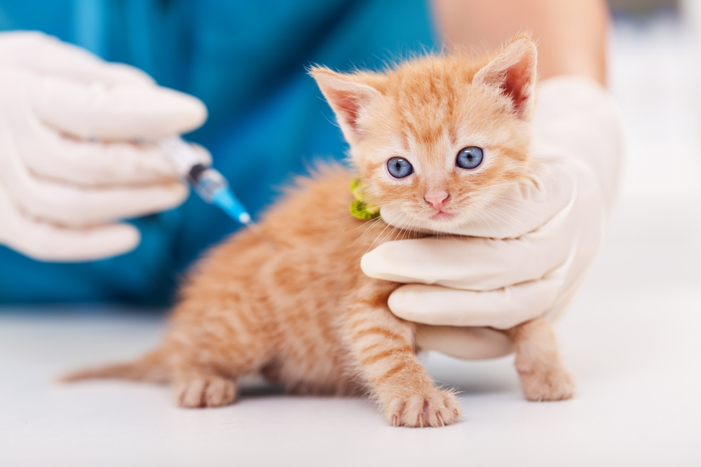

💉 Vacinação de Gatos
A vacinação é uma das principais formas de prevenção contra doenças graves, sendo essencial para garantir saúde, proteção e qualidade de vida aos gatos.

Por que vacinar seu gato? 🐾
As vacinas estimulam o sistema imunológico do animal, preparando o organismo para combater vírus e infecções. Muitas doenças felinas são altamente contagiosas e podem ser fatais se não prevenidas.
Mesmo gatos que vivem exclusivamente dentro de casa devem ser vacinados, pois podem ser expostos a agentes infecciosos por meio de roupas, objetos ou contato indireto com o ambiente externo.
Vacinas obrigatórias 💉
- V3: protege contra rinotraqueíte, calicivirose e panleucopenia
- V4: inclui proteção contra clamidiose
- V5: inclui proteção contra FeLV (leucemia felina)
- Antirrábica: obrigatória por lei e essencial para a saúde pública
Idade para vacinação 📅
- 6 a 8 semanas: início da vacinação (primeira dose)
- Reforços a cada 3 a 4 semanas até aproximadamente 16 semanas
- Antirrábica: a partir de 12 semanas de idade
- Reforço anual para manutenção da imunidade
O protocolo vacinal pode variar conforme orientação veterinária, sendo importante seguir corretamente as recomendações profissionais.
Importante ⚠️
A vacinação deve ser realizada exclusivamente por um médico veterinário, garantindo a aplicação correta, armazenamento adequado das vacinas e acompanhamento do animal.
Nunca administre vacinas por conta própria, pois isso pode colocar a saúde do seu gato em risco.
Atendimento 24h 🚨
A VidaPet Felina oferece atendimento 24 horas para emergências e orientações, garantindo suporte rápido e seguro sempre que necessário.